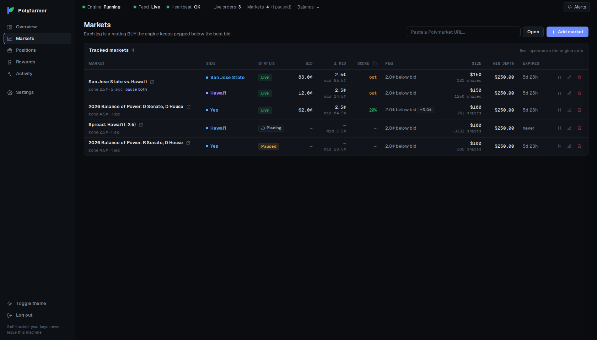
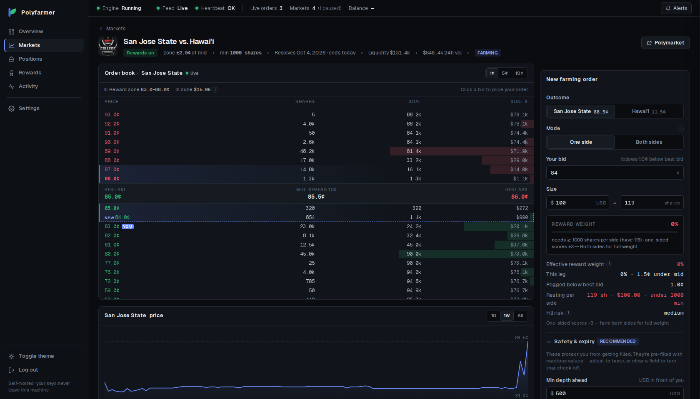

Every leg at a glance
Status, distance from the midpoint and an honest score for each order, with pause, edit and remove right there.

An open-source bot for Polymarket's liquidity rewards. It keeps your bids inside each market's reward zone, follows the book as it moves, and pulls them the moment your limits say so. Your keys never leave your machine.
Inside the zone. Closer to the midpoint scores more.
Every day Polymarket shares a reward pool among the orders resting near each market's midpoint. Closer earns more, and closer also gets filled more. Polyfarmer manages that trade-off for you, every second the book moves.
Choose from the markets that pay rewards and decide how far below the best bid your order rests. The market view previews your score before you place anything.
distance 1.0¢ · size $150 · min depth $500When the best bid moves, Polyfarmer cancels and re-places your order at the same distance, so it stays inside the reward zone.
re-pegged within a second of each moveIf the orders in front of yours thin out, or the price jumps past your limit, the order is pulled before it can be filled. It comes back when the book is healthy again.
depth ahead under $500 → pulledPolymarket pays each UTC day's rewards shortly after midnight UTC. The dashboard shows today's share as it accrues, and every payout after.
paid at 00:00 UTCPolymarket scores each order by how close it rests to the midpoint, squared. Drag the distance and see what an order earns, and how exposed it is.
Both sides: a bid on Yes and one on No, each the same distance from the midpoint. The weaker side sets the score.
Polymarket's formula: ((zone − distance) / zone)². Outside the zone an order earns nothing. Orders also need the market's minimum size to count.
Find markets, start farming and see exactly what each order earns. It runs in your browser and only talks to your own machine.
Status, distance from the midpoint and an honest score for each order, with pause, edit and remove right there.

Today's share as it accrues, yesterday's payout and 30 days of history from Polymarket's own records.
A live book with depth and the reward zone marked, and a weight meter that previews your score.

Each market gets its own limits, and anything unexpected cancels your orders.
Polyfarmer is a single program you run yourself. No hosted service, no account and nothing that phones home.
$ cargo run --release INFO Polyfarmer starting INFO │ First run — create your admin password: INFO │ setup code: kqcm-7xhn INFO │ open: http://127.0.0.1:8080/welcome?code=kqcm-7xhn INFO Loaded 0 market configs INFO Dashboard on http://127.0.0.1:8080
Polyfarmer builds from source with Rust. Pick your system, run the commands, then open the setup link it prints.
sudo apt install build-essential cmake pkg-config libssl-dev git curl curl --proto '=https' --tlsv1.2 -sSf https://sh.rustup.rs | sh git clone --branch v0.1.0 https://github.com/Vayz0001/polyfarmer.git cd polyfarmer cargo run --release
xcode-select --install curl --proto '=https' --tlsv1.2 -sSf https://sh.rustup.rs | sh -s -- -y git clone --branch v0.1.0 https://github.com/Vayz0001/polyfarmer.git cd polyfarmer cargo run --release
winget install --id Git.Git -e winget install --id Rustlang.Rustup -e winget install --id Microsoft.VisualStudio.2022.BuildTools -e --override "--passive --wait --add Microsoft.VisualStudio.Component.VC.Tools.x86.x64 --add Microsoft.VisualStudio.Component.Windows11SDK.22621" git clone --branch v0.1.0 https://github.com/Vayz0001/polyfarmer.git cd polyfarmer cargo run --release
Try it without a wallet first: DEMO=1 cargo run --example serve. Other distributions, first-run steps and remote access are in the README.
Yes. Polyfarmer is open source under the MIT license. There is no paid version and no fee on your rewards.
Yes. It places real limit orders from your Polymarket wallet, and a resting order can be filled when the market moves. Use a dedicated wallet holding only what you can afford to lose, start with one small market and watch it.
No. Polyfarmer is an independent open-source project. It is not affiliated with, endorsed by or supported by Polymarket.
Wherever Polymarket itself is available to you. Polymarket restricts some countries and regions, and Polyfarmer does nothing to get around that. You are responsible for following Polymarket's terms where you live.
A computer or small server running Linux, macOS or Windows, a Polymarket wallet with some funds, and a few minutes to build it. A small cloud server keeps it running around the clock.
It depends on the markets, how much you post and how close to the midpoint you rest. Rewards are shared with every other liquidity provider, and fills can cost more than you earn. There are no guarantees.
Install Polyfarmer, try the built-in demo, then point it at one market and watch it work.